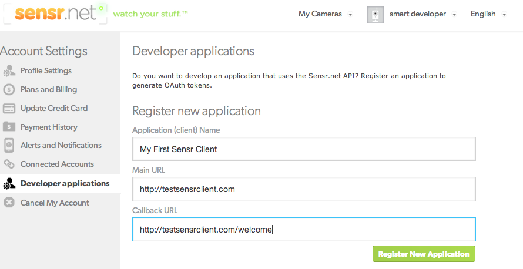
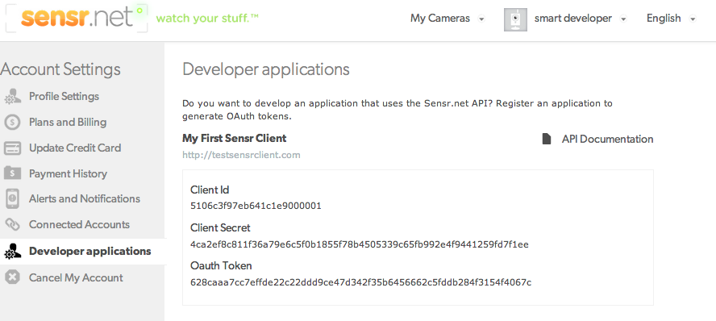

Welcome to the Sensr.net Apis
The Sensr.net APIs allows you to programmatically access content from cameras on Sensr.net. For example, with the API you can write a ruby program to build a time-lapse from your camera images, or extract motion trends across several weeks. The first paragraph consists of a quick start guide. The second introduces a couple of examples and tries to explain the guiding principles behind the Apis and how to better leverage them.
We always welcome feedback, please send your feedback regarding our Apis to developers At sensr.net
Overview
The Sensr API uses the OAuth 2.0 Protocol for authentication and authorization. So the first thing we'll ask to do is to get an Sensr.net OAuth2 token. The Sensr.net API is restful and mostly self documented. The API cross-links with URL between different resources and the top level API entry point https://api.sensr.net/u/v3/resources.json always documents all resources available to the developer. The API returns JSON and partial ruby binding are provided as a gem.Quick Start Guide
This is a 5 minute guide that should get you started and running quickly. You will need an account on Sensr.net to get access to your Api keys. You will also need to have the curl command line tool installed in your environment.
Get an Oauth token
First, login to your sensr.net account and navigate to https://sensr.net/account/applications.  Then create a new api client, you will be asked to fill out a form with the following elements:
| Field | What is it? | Example |
|---|---|---|
| Application (client) Name | The name of you application or client | MyTestClient |
| Main URL | The link to your site | http://test_client.com |
| Callback URL | The url your users are redirected to after login in | http://test_client.com/welcome |
Assuming everything went well, you should now be seeing you api client ID and client secret, as well as one API token. 
Test the API with Curl
If you have the command line tool curl installed, it's easy to get a first taste of the API. If you don't jump to the next section that introduces the API sandbox. Grab the OAuth token from your Developer Applications tab. Now start a terminal and run the following command (make sure to replace the token by a valid one):
curl -i -X GET -H "Authorization: OAuth MY_OAUTH_TOKEN" \
https://api.sensr.net/u/v3/cameras/owned.json
Make sure you use your Aouth token from your tab (not the one displayed in the example). You should get a json document in response. The API call to cameras/owned.json returns an array of cameras you own. Assuming you have cameras (active or inactive) on your account, you should be getting something like this:
The API sandbox
At sensr.net, we use the excellent API documentation tool Swagger. Swagger is a specification and framework implementation for describing, producing, consuming, and visualizing RESTful web services. The easiest way to access your API sandbox, is to head over to you developers applications page. Look for a API Documentation link on the upper corner of the web page.
Ruby Bindings
This is a three step guide that should get you started and running (in ruby) quickly. You will need an account on Sensr.net to get access to your Api keys.
Install the sensr.net gem
Run the following commands to install the official sensr.net gem.
gem install sensr
yacin@mac temp]$ irb
>> require 'sensr'
=> true
>> quit
Get your OAuth token
Refer to this previous section to get an Oauth token.Test
Grab the OAuth token from the "Developer application" page and save the code below in a ruby file sensr_api_test.rb. Make sure you replace the MY_API_TOKEN before running the script withruby sensr_api_test.rb.
require 'rubygems'
require 'sensr'
Sensr.oauth_token = 'MY_API_TOKEN'
cams = Sensr::Camera.owned
cams.each {|c| puts "camera: " + c.attributes["id"].to_s + ' ' + c.attributes["name"] + ' ' + c.attributes["accessibility"] }